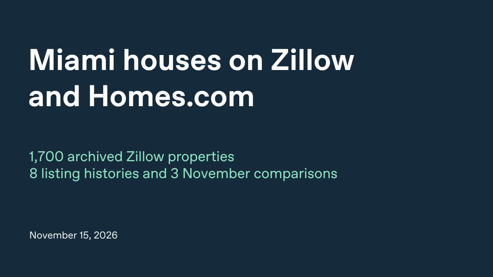

Research report · November 15, 2026
Miami houses on Zillow and Homes.com
Explore 1,703 property records with Miami mailing addresses or source labels. The March Zillow archive covers 1,700 properties. The November review includes ten Homes.com addresses and three asking prices checked on both sites. Current citywide coverage is unknown.

Read the slide text
Slide 1
Miami houses on Zillow and Homes.com
1,700 archived Zillow properties
8 listing histories and 3 November comparisons
November 15, 2026
Sources
- https://huggingface.co/datasets/dev0524/resi-dataset/tree/05c08ac6a6afabaf074cd0061164600caa85e969
- https://www.homes.com/miami-fl/houses-for-sale/
Speaker notes
The 1,700 unique Zillow properties come from three archived March captures. The November research covers eight Homes.com property histories plus three listing pairs reviewed November 15, 2026. One address appears in both sets, for ten distinct Homes.com addresses. Seven of the eight history addresses match the March 6 archive.
Slide 2
The March 6 Zillow archive
1,696
unique Zillow property IDs
Zillow marked all for sale across 41 ZIP codes. The 1,688 positive asking prices had a median of $867,000.
| Records in the March file | Count |
|---|---|
| All property rows | 6,575 |
| Miami single-family houses | 1,696 |
| In the original sample | 1,000 |
The archive uses address-city labels. Seven records include a unit marker, and five omit the street address.
Sources
Speaker notes
The published miami-fl.json contains records for several municipalities and property types. Counts refer to the March 6 archive. The 1,696 retained unique Zillow property IDs include every property from the prior 1,000-home sample. The expanded archive follows explicit source classifications. The published file contains 1,684 without address exception, seven with a unit marker and five with an undisclosed street address. The March median uses the 1,688 positive asking prices. The source city label Miami does not identify the legal city boundary.
Slide 3
Four additional properties in later captures
The March 10 and 12 files add four Zillow property IDs. Each already carried a recently sold status when the archive captured it.
| Archive capture | Property status | Unique records |
|---|---|---|
| March 6, 2026 | For sale | 1,696 |
| March 10, 2026 | Recently sold | 2 |
| March 12, 2026 | Recently sold | 2 |
Across the three dates, the archive documents 1,700 distinct properties. Capture dates record when the archive observed a home.
Sources
Speaker notes
The first and last portions of 174 unnamed files were screened, after which 27 candidate files were checked in full. The 27 contained 61,947 total records. Later captures added four distinct properties. Other files received endpoint screening only, and no complete present-day inventory can be inferred.
Slide 4
November search pages cover different areas
Both portals label their search “Miami.” Homes.com also shows addresses in Hialeah, Coral Gables and Doral.
| Public search page | Displayed results | Page date |
|---|---|---|
| Zillow single-family homes | 1,613 | Around Nov 10, 2026¹ |
| Homes.com houses | 3,895 | Nov 15, 2026 |
The same home can appear on both sites. Adding these counts would double-count shared listings and mix different search areas.
¹ Approximate crawl date of the indexed Zillow page.
Sources
Speaker notes
On November 15 the Zillow indexed page was labeled crawled five days earlier. The visible results heading read 1,613, while the browser title displayed 1,612. The Homes.com search page displayed 3,895. These are page-header observations rather than property exports. Counts and page content can change.
Slide 5
Matching eight Homes.com property histories
Seven street addresses and ZIP codes matched the March 6 Zillow archive. Six also carried the same MLS listing ID.
| Property | What the records show |
|---|---|
| 5550 SW 87th Ave | Same house, new MLS number on September 30. |
| 6531 SW 20th St | No March address match. The listing details say West Miami. |
Four of the seven matched pages show later sales. These eight selected examples cannot establish the sale rate or total overlap across the two sites.
Sources
- https://www.homes.com/property/5550-sw-87th-ave-miami-fl/87xlj7xnfz8xf/
- https://www.homes.com/property/6531-sw-20th-st-miami-fl/crw0rldeh3jxy/
- https://huggingface.co/datasets/dev0524/resi-dataset/tree/05c08ac6a6afabaf074cd0061164600caa85e969
Speaker notes
Homes.com research was reviewed November 15, 2026. The September listing ID for 5550 SW 87th Ave was A12098257; the earlier one was A11835765. Review dates describe when pages were checked; historical event dates describe transactions or listing changes.
Slide 6
What later sale records show
For these three Miami addresses, the March 6 Zillow asking price and the subsequent Homes.com sale price describe different events.
| Street address | March asking price | Later sale price | Sale date, 2026 |
|---|---|---|---|
| 15264 SW 102nd Ct | $600,000 | $560,000 | April 28 |
| 831 NW 21st Ct | $420,000 | $390,000 | May 5 |
| 701 SW 27th Rd | $5,000,000 | $3,820,000 | May |
Property details can differ, too. At 831 NW 21st Ct, Zillow recorded 2 bathrooms and Homes.com reports 1½.
Sources
- https://huggingface.co/datasets/dev0524/resi-dataset/tree/05c08ac6a6afabaf074cd0061164600caa85e969
- https://www.homes.com/property/15264-sw-102nd-ct-miami-fl/4ebz2ljx86swd/
- https://www.homes.com/property/831-nw-21st-ct-miami-fl/5ls6dywp0lprs/
- https://www.homes.com/property/701-sw-27th-rd-miami-fl/hg1y5vteg7xx8/
Speaker notes
The Homes.com links identify the individual properties. Zillow asking prices are from the pinned March 6 file. The 701 SW 27th Rd purchase history reports month precision, so no day is assigned. These examples were deliberately chosen for inspection.
Slide 7
Three November listings match on both sites
On November 15, the indexed Zillow and Homes.com pages showed the same asking price and MLS number for each of these addresses.
| Miami property | Asking price on both sites | Shared MLS number |
|---|---|---|
| 1829 NW 62nd Ter | $425,000 | A12071702 |
| 1861 SW 22nd Ter | $1,150,000 | A12088401 |
| 5550 SW 87th Ave | $1,500,000 | A12098257 |
Zillow showed “For sale” and Homes.com showed “Active.” These are portal observations. Live MLS availability was not independently checked.
5550 SW 87th Ave also appears in the eight histories, making 10 distinct Homes.com addresses.
Sources
- https://www.zillow.com/homedetails/1829-NW-62nd-Ter-Miami-FL-33147/44158652_zpid/
- https://www.homes.com/property/1829-nw-62nd-terrace-miami-fl/4dhg1ecdnhwt9/
- https://www.zillow.com/homedetails/1861-SW-22nd-Ter-Miami-FL-33145/43855601_zpid/
- https://www.homes.com/property/1861-sw-22nd-terrace-miami-fl/r6mdp3testy6e/
- https://www.zillow.com/homedetails/5550-SW-87th-Ave-Miami-FL-33165/44205211_zpid/
- https://www.homes.com/property/5550-sw-87th-ave-miami-fl/87xlj7xnfz8xf/
Speaker notes
The review date is November 15, 2026. The indexed pages had different crawl dates so these checks do not guarantee availability. One house appears in both cohorts, giving ten distinct Homes.com addresses across the eight historical cases and three November comparisons.
Explore the property records
| Property | Price | Source |
|---|
Sources
The property records come from dated observations. Each capture date and the scope of the Homes.com checks are shown in the presentation.